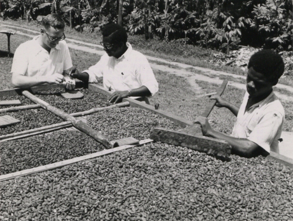
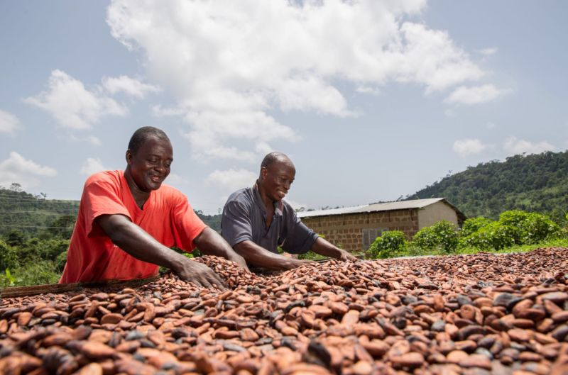
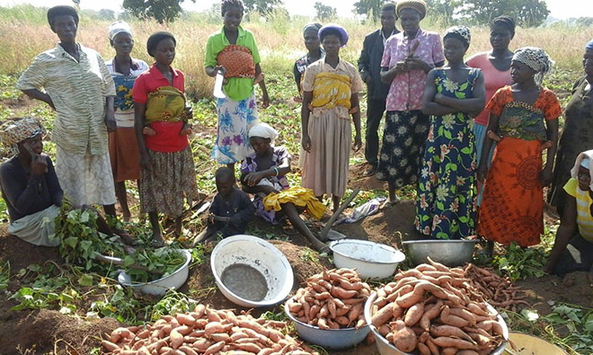
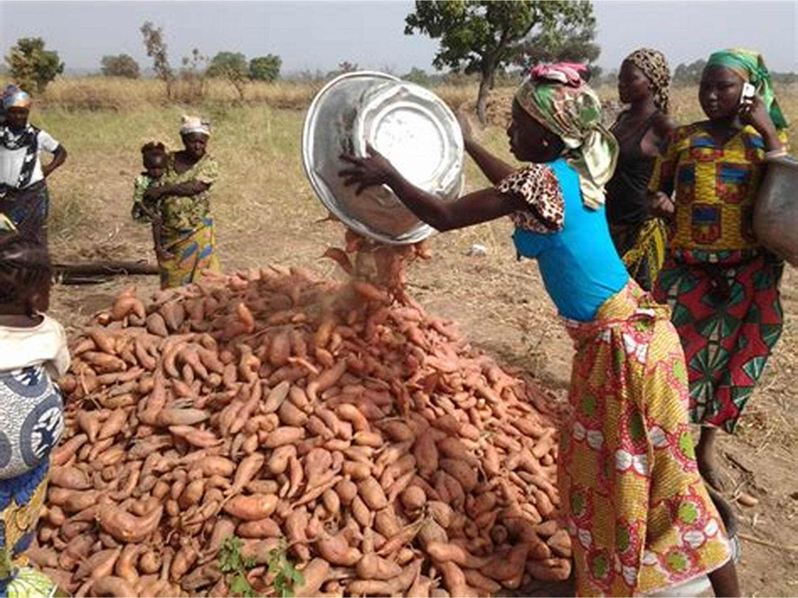
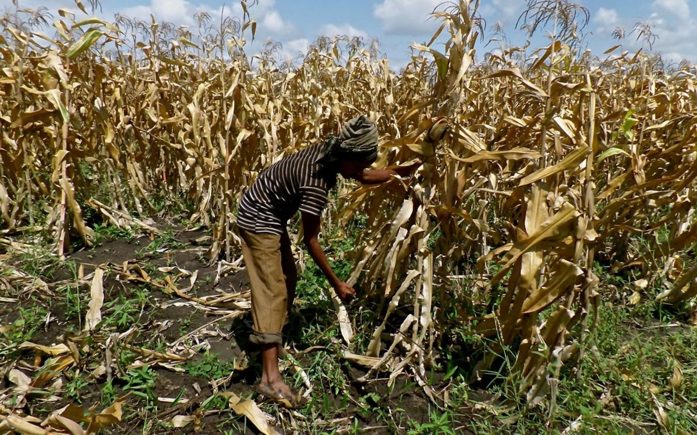
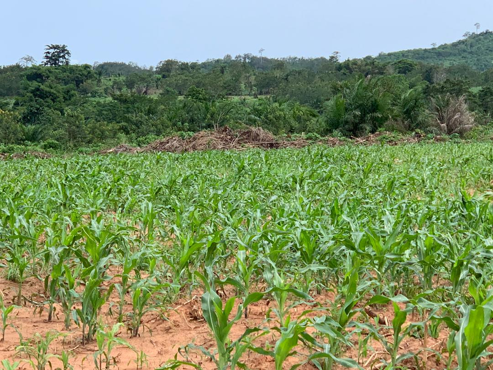

AGRICULTURE PRODUCTS
 Harvest processing of Cocoa beans in Ghana in the 20th century For over 81 years Agriculture in Ghana has been regulated by one of its highest yielding exports-Cocoa. Cocoa is Ghana's principal agricultural export. Cocoa production occurs in the forested areas of Ghana: Ashanti Region, Brong-Ahafo Region, Central Region, Eastern Region, Western Region, and Volta Region. The crop year begins in October while the smaller mid-crop cycle starts in July. All cocoa, except that which is smuggled out of the country, is sold at fixed prices. Although most cocoa production is carried out by peasant farmers, a small number of farmers appear to dominate the trade. The government controls the industry through the Ghana Cocoa Board (Cocobod). As of 2010, Ghana's cocoa bean exports were valued at $2,219.5 million (US).As of 2017, Ghana is ranked number two for Cocoa exports behind Côte d'Ivoire bringing in a $1,914 per metric ton (2204.6 lbs. • ~$.868/lbs) received; Cocoa is slated to exceed the national average supply by 97,500 metric tons. This massive increase, in turn, will cause "supply and demand" issues for larger and smaller farmers sharing a 1.3-billion-dollar syndicated loan disbursed by the government for the 2017–2018 season.
The success of Ghana in cocoa production has shaped the economy a great deal and has been able to provide livelihood to more than half a million farmers in the southern part of the country. However, this did not happen overnight but by deliberate worldwide economic reforms.
SWEET POTATO FARMING
 The sweet potato is a viable resource, because it can be used for many things. The very roots of the sweet potato can be used to help mothers wean their children off of mother's milk. Even though the sweet potato is a good food source for humans, it can be also used in the feeding of livestock. Ghana is considered the leader in research of root crop. The sweet Potato is considered a prime crop. It is mostly grown in the northern parts of Ghana, as well as nationally. When the sweet potato is brought to market it is processed into things like flour, bread, and beverages are made. Northern Ghana has not been able to take full advantage of this food source, in every part of the country, because some of the land is not fertile, and a complex socioeconomic limitation such as many farm owners not being able to come together.[26] This causes a disruption in the market. There is this mistrust among the local farmers because most of the farmers have different opinions on how the product should be marketed. There are five groups of people that help get the Sweet potato to market, the Farmers, traders, commission agents the processors and final the consumers. They all deal with each other in a private and individuals basis. Transportation of the sweet potato is mostly done by outside source such as hired transportation.
MAIZE FARMING IN GHANA
 The main industrial crops are oil palm, cotton, rubber, sugar cane, tobacco, and kenaf, the latter used in the production of fiber bags. None is of strategic economic importance, and all, apart from oil palms.[28] Despite claims that such crops could assist local industrialization efforts, the government has not focused the same attention on this sector as on export crops. For example, sugar cane output has diminished with the closure of the country's two sugar mills, which produced 237,000 tons per year in 1974–76, but only 110,000 tons in 1989.
The government has actually encouraged the export rather than the local processing of rubber, rehabilitating more than 3,000 hectares of plantations specifically for export production rather than revitalizing the local Bonsa Tire Company, which could produce only 400 tires per day in 1988 despite its installed capacity for 1,500 per day.
By the 1990s, the tobacco sector was expanding and moving toward higher export production. Ghana's dark-fired leaf probably grew too fast and required rich soil to compete effectively with rival crops, but the potential for flue-cured and Burley varieties is good. Pricing difficulties had reduced tobacco production from 3,400 tons in the early 1970s to an estimated 1,433 tons in 1989. Output began to improve in 1990, reaching 2,080 tons. In 2006–2007 BAT (British America Tobacco) shut down their Torikawa plant amid a social movement against tobacco smoking which resulted from high taxes caused by heavy tobacco smuggling. A cotton, is a significant commercial crops
The Leaf Development Company was established in 1988 to produce tobacco leaf for the local market and to lay the basis for a future export industry. In 1991, the company's first commercial crop amounted to 300 tons of flue-cured, 50 tons of Burley, and 50 tons of dark-fired tobacco (all green leaf weights), of which 250 tons were exported, earning US$380,000. In 1991 Rothmans, the British tobacco company, acquired a 49.5 percent stake in the company and took over management of the Meridian Tobacco Company in partnership with the state-owned Social Security and National Insurance Trust. Another firm, the Pioneer Tobacco Company, announced a 92 percent increase in post-tax profits of more than ¢1 billion for 1991. The company declared dividends worth ¢360 million, double the amount paid out in 1990.
Cotton production expanded rapidly in the early and mid-1970s, reaching 24,000 tons in 1977, but it fell back to one-third of this figure in 1989. Since the reorganization of the Ghana Cotton Development Board into the Ghana Cotton Company, cotton production steadily increased from 4 percent of the country's national requirement to 50 percent in 1990. Between 1986 and 1989, Ghana saved US$6 million through local lint cotton production. The company expected that between 1991 and 1995, about 20,000 hectares of land would be put under cotton cultivation, enabling Ghana to produce 95 percent of the national requirement. PAGE 5